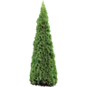

Oil Grimoire

Thuja Essential OilThuja essential oil is poisonous and is not for home aromatherapy, internal use, or external use. It is included here for botanical and historical reference only.
Other Names & Related Species
Known as swamp cedar, white cedar, northern white cedar, eastern white cedar, tree of life, American arborvitae, and cedarleaf oil. Many forms and cultivars exist, including the western red or Washington cedar (Thuja plicata), the Chinese or Japanese cedar (T. orientalis or Biota orientalis), and the North African T. articulata, which yields the resin sanderac. The hiba tree (Thujopsis dolobrata) is a separate species used to produce hiba wood oil and hiba leaf oil in Japan; hiba wood oil is reported as non-toxic, non-irritant, and non-sensitizing, unlike the other thuja oils, and is used extensively in Japan as an industrial perfume.
Origin & Distribution
Native to north-eastern North America and cultivated in France. The oil is produced mainly in Canada and the United States, with similar oils also produced in East Asia. The tree must be at least fifteen years old before it is ready for essential oil production.
Folk Tradition
Thuja was used as an incense by ancient civilizations for ritual purposes. A decoction of the leaves has been used for coughs, fever, intestinal parasites, cystitis, and venereal diseases. An ointment has been used for rheumatism, gout, warts, verrucae, psoriasis, and other ailments. The twigs are listed in the British Herbal Pharmacopoeia, used specifically for bronchitis with cardiac weakness, and for warts.
Extraction & Characteristics
The essential oil is produced by steam distillation from the fresh leaves, twigs, and bark. The liquid is colourless to pale yellowy-green with a sharp, fresh, camphoraceous odour. Principal constituents are thujone at approximately 60 percent, with fenchone, camphor, sabinene, and pinene among others. Reported actions include antirheumatic, astringent, diuretic, emmenagogue, expectorant, insect repellent, rubefacient, stimulant of the nerves, uterus, and heart muscles, tonic, and vermifuge, but the oil is not safe to apply for any of these.
Where You Will Encounter It
Used in pharmaceutical products such as disinfectants and sprays, and as a counter-irritant in analgesic ointments and liniments. It also appears as a fragrance component in some toiletries and perfumes, and as a flavour ingredient in most major food categories provided the finished food is certified thujone-free.
Traditional Grimoire Notes
Cedar Leaf (Thuja) is an oil of Jupiter, promoting peace, contentment, wealth, and good fortune, in addition to driving away all evil and negativity. Believed to attract good spirits and repel bad ones. ⚠️ Thuja essential oil is toxic and not for home use — these properties apply to historical and ritual tradition only.